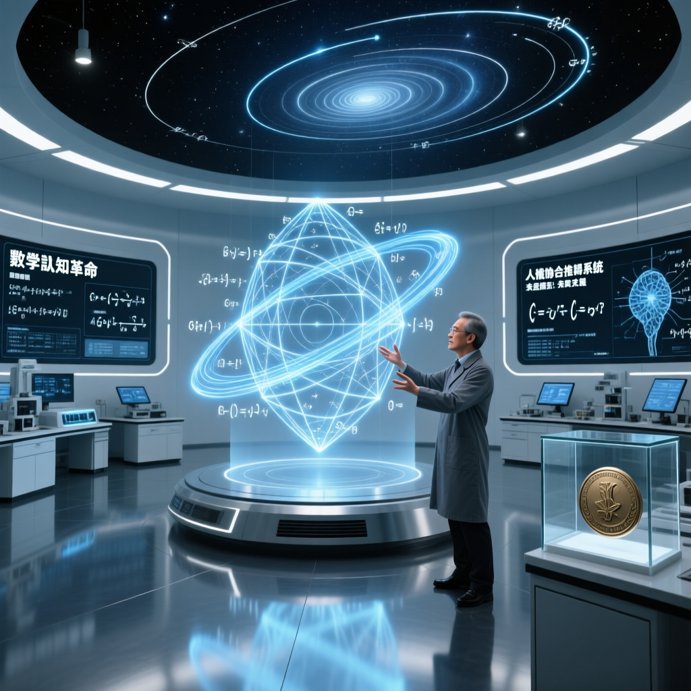

當思想生成成本趨近於零，驗證與篩選成為科研新核心。數學界巨擘陶哲軒揭示 AI 如何推動數學進入實驗時代，並徹底改變科學研究的組織結構與協作模式。

本次報告指出，AI 技術已將思想生成的成本壓低至幾乎為零，科學發現的關鍵環節正從理論提出轉向驗證、評估與篩選。這一變革正在重構數學這門最純粹的理論學科，使其首次具備實驗性研究的可能性。
數據顯示，面對 AI 每日生成的海量理論與論文，傳統同行評審體系已無法應對。業界觀察認為，科學研究的組織結構亟需根本性改革，以適應新時代的需求。
AI 使理論生成變得極其廉價，科學家的核心任務從「提出想法」轉向「驗證與篩選」。
數學家首次能夠進行系統性實驗，收集數據驗證猜想，推動學科向資料驅動發展。
每日上千篇 AI 生成論文湧現，傳統評審體系崩潰，需建立新的篩選機制。
未來數學研究將依賴人類直覺與 AI 計算能力的深度協作，半形式化溝通成為關鍵。
研究指出，約翰尼斯·凱普勒基於第谷布拉赫數十年的精確觀測資料，最終推翻圓形軌道假設，確立行星運動定律。這一歷史案例說明，高精度資料與嚴謹驗證是科學突破的基石。
專家分析強調，當前 AI 雖能從資料中推導規律，但區分真實科學定律與數字巧合成為新挑戰。例如波德定律曾被視為自然法則，最終卻被證明僅是數學巧合，這一教訓在 AI 時代尤為重要。
| 特徵 | 傳統數學研究 | AI 時代數學研究 |
|---|---|---|
| 工作方式 | 案例研究（一次一題） | 大規模調查（同時處理數千題） |
| 協作規模 | 1.5-2.5 人 | 50+ 人（含非專業數學家） |
| 驗證方式 | 人工審查 | 形式驗證系統自動檢查 |
| 研究工具 | 黑板 + 粉筆 | AI 助手 + 證明系統（如 Lean） |
| 產出速度 | 數月一題 | 三個月 2200 萬題 |
柯西（Cauchy）出版數學教科書，其內容至今仍然適用，反映數學的極端保守性。
《Do Not Erase》數學黑板攝影集出版，記錄數學家傳統工作方式。
陶哲軒預測 2026 年 AI 將成為可信賴的數學研究合作者。
陶哲軒發表 24 篇論文；AlphaEvolve 攻克 67 個數學問題。
SAIR 基金會活動上，陶哲軒揭示 50 人三個月解決 2200 萬道代數題的秘密武器：形式驗證。
陶哲軒與 OpenAI 對談：AI 已從實驗性工具轉變為實用研究工具，節省時間多於浪費。
儘管 AI 在計算與生成方面表現卓越，表達藝術、論證能力與敘事技巧仍是人類獨有的優勢。在數學這樣嚴謹的領域，直覺判斷與靈感閃現依然是推動科學進步的核心動力。
「我辦公室有 6 塊黑板。我愛它們。我不會放棄的。但我們剛用 AI 和形式驗證解決了 2200 萬道數學題。」
— 陶哲軒（Terence Tao），菲爾茲獎得主數據顯示，數學研究正經歷前所未有的轉型。過去依賴純粹邏輯推演的學科，如今藉助 AI 工具可進行實驗性探索，收集方法有效性數據，推動學科向資料驅動方向發展。
業界預測，未來數學研究將建立在人類與 AI 深度協作的基礎上。年輕研究者需培養高度適應性思維，把握新工具帶來的機遇，探索尚未開發的科研領域。
專家分析認為，隨著技術持續進步，數學研究將迎來兼具實驗性與規模性的全新階段，不僅加速解決黎曼猜想等經典難題，更可能開拓人類對世界理解的全新邊疆。
陶哲軒強調，年輕人需具備高度適應的心態，學習與 AI 協作的技能，特別是形式驗證工具（如 Lean）的使用。未來的數學家不僅需要傳統證明能力，更需要駕馭 AI 工具處理海量問題的能力。